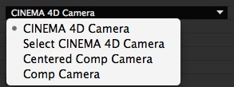

CINEWARE in After Effects
With CINEWARE in After Effects, CINEMA 4D scenes and animations can be loaded directly into an After Effects composition where it can be viewed and rendered within After Effects.

What you should know about the CINEWARE workflow
In the newest version of Adobe After Effects, complex 3D elements, scenes and even animations can be loaded from MAXON CINEMA 4D into an After Effects composition. The unique integration of these applications lets After Effects users create impressive motion graphics compositions even faster and easier than before.
To ensure optimal ease of use, the powerful CINEMA 4D render engine CINERENDER was integrated into After Effects in a way that makes it possible to easily and directly render CINEMA 4D layers loaded into the composition. This eliminates the need to switch back-and-forth between applications or, depending on the production workflow, make repeated requests for 3D data.
Getting started in the fascinating world of 3D is simple. If you do not yet own a full version of CINEMA 4D you can take your first steps in 3D using the CINEMA 4D Lite version included in After Effects.
For comprehensive, professional work in 3D we recommend the CINEMA 4D Broadcast or CINEMA 4D Studio versions.
All product information is available at www.maxon.net.
Loading and editing MAXON CINEMA 4D files
Existing CINEMA 4D files (.c4d) can be loaded as assets directly in the Adobe After Effects project window and placed in the composition as a CINEMA 4D layer. The parameters of CINEMA 4D layers will be displayed as ,CINEWARE’ effects in the effect window. Additional effects can be added as usual to the CINEMA 4D layer. These will affect the rendering generated by the CINERENDER render engine.
If no CINEMA 4D file exists, a file can be created via the After Effects
If a full version of CINEMA 4D is not installed on your computer, CINEMA 4D LITE, which is included in After Effects, will open. After a new scene has been created it can be saved via the
To make changes to a CINEMA 4D file that has been imported into After Effects, select the asset or CINEMA 4D layer and select
Projects that have been modified and saved in CINEMA 4D will automatically be updated in After Effects.
Configuring the display / render settings
The integration of the CINEMA 4D render engine CINERENDER makes it possible to render CINEMA 4D layers directly in After Effects. This means that After Effects users maintain complete control of all 3D elements in their composition through to the final render. The render settings are controlled by the CINEWARE effect settings.
Note that each CINEMA 4D layer basically has its own render and display settings. All instances of a CINEMA 4D file loaded into the composition will automatically have their render and display settings synchronized unless the Synchronize Layer control, at the top of the control panel, is set to off.
Each rendered frame will be cached to speed up workflow. When using reduced or automatic resolutions, the CINEMA 4D render results will also have a correspondingly reduced resolution.
To ensure a faster workflow, the Render Settings can be set to Software while you continue to work on the composition. Textures will be displayed in low resolution and shaders will be evaluated to a correspondingly lesser degree.
Options are also available for deactivating textures and shaders Software Rendering deactivates textures and shaders; Draft Rendering only deactivates textures) and for preventing pre-calculations for dynamics or particle simulations. These options should, however, be enabled for final renderings or when caching simulations (baking) in the CINEMA 4D scene.
See also Dynamics Caching and Particle baking.
Rendering speed can also be greatly increased by caching the textures using the Keep Textures in RAM option.
Working with cameras and CINEMA 4D scene elements
Just as in After Effects, any number of cameras with different settings, including animation, can be added to the CINEMA 4D file. To ensure a proper integration between the two applications, the camera movements must be synchronized. This is done in the CINEWARE Project Settings menu.
Here you can define if an existing CINEMA 4D camera or an After Effects camera should be used.
Four options are available:

The option CINEMA 4D Camera will use the currently active CINEMA 4D scene camera. Use the Select CINEMA 4D Camera option to select an existing CINEMA 4D camera. Note that only cameras already present in the CINEMA 4D scene can be selected.
The next two options let the After Effects user create cameras. The difference between the options is the coordinate system used. The origin of the coordinate system used by CINEMA 4D lies at the center of the scene and its axes are oriented into 3D space in positive and negative directions. In After Effects, a coordinate null point lies in the top left corner of the composition.
This is why the CINEWARE settings offer two methods with which to work with cameras in After Effects. If the Comp Camera option is selected, the coordinates for After Effects and CINEMA 4D will be the same. Because this can be slightly confusing for long-term After Effects users, the Centered Comp Camera option can be used to align both coordinate systems.
If the Extract function is used to extract a CINEMA 4D camera to After Effects it is recommended that the Comp Camera option be used. Otherwise the view will be offset as a result of the deviating coordinate system.
Layers
CINEMA 4D has a comprehensive layer system that can be used to organize complex 3D scenes. This layer system is not designed to create a stacked layer hierarchy as in After Effects but rather to group scene elements for easy and efficient access. Individual parts of a scene can, for example, be hidden and unhidden, if necessary. These CINEMA 4D layers can be activated or deactivated individually in After Effects. Only active CINEMA 4D layers will be rendered in the composition's CINEMA 4D layer. This makes it possible to use a single CINEMA 4D file multiple times in a given composition as its own CINEMA 4D layer and display specific elements of the scene.
For example, 3D background and foreground elements can be separated and stacked in the After Effects composition or combined with footage in After Effects.
Multi-passing
Multi-passing for 3D is the process of rendering an image as separate image elements instead of rendering all elements together as a single image.
These elements are brought together in compositing where these separate image elements can be edited, adjusted or modified in one of several ways, including color correction. A typical example of multi-pass rendering would be to output different surface reflections (diffuse, specular, shadow, etc.) separately and bring them together in After Effects with different modes.
A composition can be quickly constructed using the CINEWARE Add Image Layers option. Several CINEMA 4D layers will be created, each of which will contain a single active render element. The Set Multi-Pass option lets you define what will be displayed on a given CINEMA 4D layer.
To create additional layers for individual render elements, a layer can be duplicated and the desired element can be added using the aforementioned option.
Multi-passing is also used to output object passes, which are used as Luma Mattes for separation correction of individual elements in After Effects. Note that at least the Standard Draft render mode must be activated in order to generate individual passes. Additional passes can only be output via the Compositing tag.
To configure object passes, the corresponding objects in CINEMA 4D must have a Compositing tag assigned to them with the desired group ID. The Multi-Pass option must also be enabled in the CINEMA 4D render settings with the desired object passes defined. Since After Effects displays the names of the passes, it is recommended that the passes already be named in CINEMA 4D.
However, please note that CINEMA 4D post effects and the separation of individual lights (light multi-passing) are not yet supported in this integration.
To achieve an optimal result when working with multi-passes, it is recommended that Adobe After Effect's project settings be set to Linear Workflow (linearized Working Space) and that a 32-bit float color depth be used, if possible, otherwise artifacting may occur.
Exchanging scene information
In order to align camera animations or scene lighting between CINEMA 4D and an After Effects composition, cameras and lights, including animations, set in the CINEMA 4D scene can be transferred to After Effects at any time. All comparable camera and light properties will be aligned. Clicking on the Extract button in the CINEMA 4D Command menu will create the corresponding elements in the After Effects composition.
Note that only those lights will be transferred that have the Export to AFX option enabled in their General tab's settings in CINEMA 4D. This option is enabled by default for every Light object and every camera in CINEMA 4D.
After Effects cameras with existing animations can also be transferred to the CINEMA 4D scene. This can be done using the Merge option in the Command menu.
Use the
Using references
A CINEMA 4D layer in After Effects is a 2D layer. To effectively place 3D layers from After Effects in a composition it can help if information regarding the position of CINEMA 4D objects as color surfaces / solids is made available. For this to occur, polygon objects or layers in the CINEMA 4D scene must have an External Compositing tag assigned to them. The Solid option can be enabled and a size for the color surface in After Effects can be defined.
Use the CINEWARE Extract function to import the corresponding data.
To avoid problems when importing CINEMA 4D scenes into After Effects, the Save Polygons for Melange and Save Animation for Melange options should be enabled in the CINEMA 4D
Overview of individual parameters
In the following you will find a brief explanation of the CINEWARE settings. A functional explanation in the context of practical application can be found in the content above.
Options
If you want to use a different renderer than the CINERENDER provided, i.e., a new or different CINEMA 4D version, enter the path to the corresponding CINEMA 4D executable file (*.exe or *.app).
Note that the other CINEMA 4D versions must be licensed when using them to render!
This path only serves to define the CINEMA 4D version that should be used for editing CINEMA 4D files. Assuming you have a new CINEMA 4D version installed and want to use it to edit a file, all you need to do is enter the path to the corresponding CINEMA 4D executable file (*.exe or *.app).
This is where the communication port between CINEWARE and the integrated CINEMA 4D renderer (CINERENDER) is defined. If this setting must be changed for any reason, After Effects will need to be restarted.
Decides whether the layer should mimic its render and project settings in all other layers for the c4d file in this composition. Equally it decides whether or not other layers can change this layer's settings. Note, this parameter is only visible when there is more than one instance of the c4d file in the compostion.
Render settings
Because render times can increase dramatically for complex scenes, CINEWARE offers three different render modes:
For the most part, the display reflects that of the CINEMA 4D Viewport and serves to preview the scene. Shaders and multi-passes will not be displayed.
Display without antialiasing and can be used as the preliminary stage to final rendering.
Renders the scene using the render settings defined for the CINEMA 4D scene.

 Software - Draft - Final
Software - Draft - Final
Defines the type of display. Either the original CINEMA 4D settings will be used or the display will be reduced to Wireframe or Box to permit more fluid work.
Disables the display of textures for quicker navigation.
Disables the rendering of dynamic, cloth and particle simulations as well as MoGraph simulations in order to increase display speed. Hence, the displayed results of these processes will not be accurate. This option should not be enabled for final rendering - or simulations should already be cached in the CINEMA 4D file.
This option should never be enabled for final rendering because particle effects, many MoGraph functions, dynamics and cloth will not be displayed or rendered correctly.
Speeds up rendering by caching textures so they do not have to be re-rendered (Drawback: Modifications made to textures will not be displayed).
Purge Memory
After prolonged use the render server can become slower as it stores the scenes being processed. If the rendering seems slower or less responsive this button can be used to flush the memory of the render server (this option is not visible if using CINEMA 4D R15 or earlier to render).
Project Settings
Defines the camera that will be used to display the CINEMA 4D layer.
The default - and active - camera in the CINEMA 4D scene.
Lets you select a camera from the CINEMA 4D scene.
This camera uses the After Effects coordinate system.
Equal coordinates for After Effects and CINEMA 4D will be displayed. Because the CINEMA 4D coordinates differ from the After Effects coordinates, After Effects users will have to switch their train of thought. This option must be used if a CINEMA 4D camera is extracted because the After Effects view would otherwise switch to the CINEMA 4D scene.
Set Camera
If a CINEMA 4D scene contains cameras in addition to the default camera, these can be selected using the Set Camera button.
If a CINEMA 4D scene contains layers, this is where they can be selected. Only those CINEMA 4D scene elements that are assigned to this CINEMA 4D layer will be used. This makes it possible to display individual object groups in After Effects on CINEMA 4D layers.
Set Layers
This is where layers in the CINEMA 4D scene can be selected.
Multi-Pass (Linear Workflow)
Enabling the CINEMA 4D Multi-Pass option makes it possible to define individual passes for the CINEMA 4D scene. These are pre-defined, even if the Multi-Pass option has not yet been enabled in the CINEMA 4D scene.
Special passes such as Object Channel must be set up in the CINEMA 4D scene and enabled in the Render Settings (Multi-Pass) menu.
Set Multi-Pass …
Here individual passes can be selected to be used in the Timeline. Note that post effects (e.g., Hair, Sketch and Toon, etc.) are not supported.
The multi-passes defined in CINEMA 4D can be extracted to the Timeline by enabling the Define Multi-Passes option in CINEWARE and by clicking on Add Image Layers.
In other words, only those multi-passes that were defined in the CINEMA 4D Render Settings will be extracted.
Add Image Layers
If the Add Image Layers button is clicked without first enabling the Define Multi-Passes option, all existing multi-passes will be extracted to the Timeline.
Post effects and light passes are not supported by multi-passes.
Commands
Merge
The active composition camera in After Effects will be added to the CINEMA 4D scene. This can also be an animated camera.
Extract
All cameras and lights in a given CINEMA 4D scene, including their animations and properties, will be transferred to the After Effects composition as layers in the Timeline.
Polygon objects that have an External Compositing tag assigned to them will be placed as NULL layers as position references in the composition or generated as color surfaces.